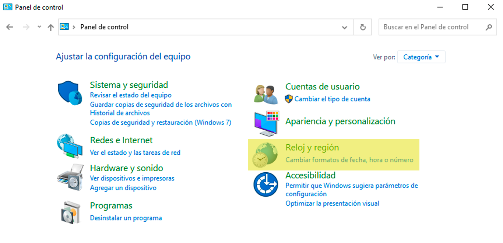
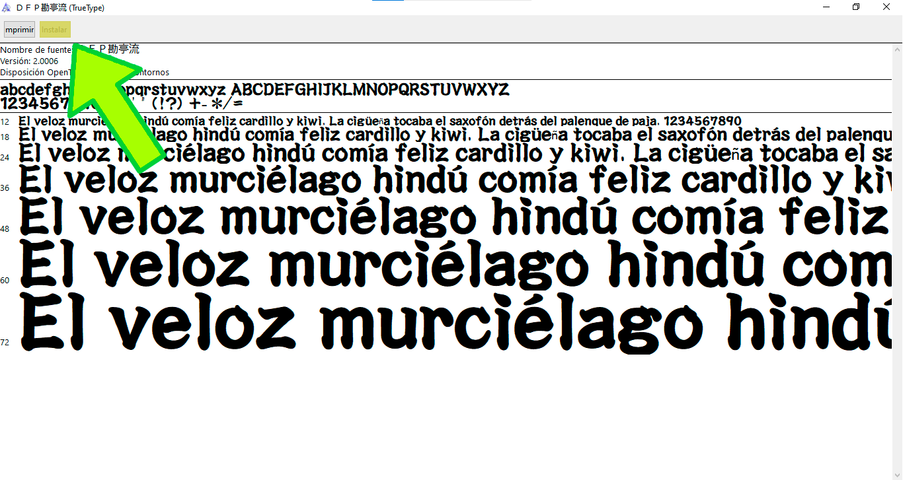

Bienvenido a la guía de simuladores de Taiko no Tatsujin (太鼓の達人)
Prerequisitos
Todos los simuladores poseen ciertos requerimientos e instalaciones antes de que puedan funcionar correctamente.
Cómo cambiar tu idioma local
¡Esto NO cambiará el idioma con el que se muestra tu computador!
¿Qué es el idioma local?
El idioma local es cómo tu computador muestra texto no-unicode en los programas.
¿Por qué debes cambiarlo?
Para mostrar el texto en japonés, el cual es un requisito para los simuladores y tu idioma local debe estar en japonés. De esta forma tu computador puede analizar correctamente las canciones con nombres japoneses y cargar el audio de la música.
Este proceso es un poco diferente para Win7/WinXP.
- Ve al Panel de control en Windows, usando la barra de búsqueda o usando el atajo en el menú de Windows.
- Luego, dirígete a la opción de Reloj y región.
- Selecciona Región, y haz click en la pestaña de "Administrativo".
- Presiona el botón de"Cambiar configuración regional del sistema..." y selecciona "Japonés (Japón)". NO marques la casilla que se encuentra debajo!
- Reinicia tu computador, y ya está listo!


Instala las fuentes de Taiko no Tatsujin
Tu computador no posee por defecto las fuentes utilizadas en los simuladores más modernos, por lo que deben ser instaladas manualmente.
-
Descarga las fuentes necesarias.
- DFPKanteiryu-XB (DFB勘亭流-XB) | Requerido
- FOT-Ōedo Kanteiryu Std E (FOT-大江戸勘亭流 Std E) | Requerido para los simuladores con el estilo Nijiiro (ニジイロ)
-
Haz doble click en el archivo de fuente para instalarlo.
 -
En algunos simuladores de TJAPlayer3, es necesario especificar la fuente. En el archivo config.ini, cambia lo siguiente:
FontName=ＤＦＰ勘亭流para la fuente estándar
FontName=FOT-大江戸勘亭流 Std Epara la fuente de Nijiiro
No es necesario reinicar tu computador después de la instalación.
Para la fuente estándar de taiko, se ha añadido compatibilidad adicional al elegir ciertas canciones. Para activar esta compatibilidad, el nombre de las canciones en el archivo TJA debe ser cambiado.
‽カオスタイム‽
亜空間遊泳ac⒓
アルムジカac⒕.0V
毒ⅬCANⅮ♡
poxei♢DOON
(Cualquier canción con !!) -> ‼
Cómo obtener canciones
Encontrar canciones puede ser complicado, en especial para aquellos que no escriben o leen en japonés. Esta guía otorga fuentes confiables para encontrar mapas en alta calidad (TJAs) y audio. Asegúrate que tu simulador está funcionando antes que descargues las canciones.
TJADB
TJADB es la forma más eficiente a la fecha de encontrar canciones en alta calidad, principalmente para canciones oficiales. Canciones personalizadas también están incluídas en un canal aparte. Hasta el momento, todas las canciones que están disponibles para 太鼓の達人グリーン 2.0 (Versión Verde ("Green Ver.") Japón + Asia) se encuentran disponibles. Puedes encontrar el Discord de TJADB aquí. ¡Una página web también se encontrará disponible pronto!
GetUploader
GetUploader, también conocido como "uploader.jp" o "ux.getuploader.com", es la página donde muchos creadores japoneses de TJA y usuarios suben sus trabajos. Descargar desde aquí puede dar resultados de diferentes calidades, y una gran mayoría de ellos son canciones personalizadas. Zen Gaido Fumen Haifu (全難易度譜面配布) en generalmente una buena fuente en la pagina, con canciones oficiales a la fecha y una gran variedad de canciones personalizadas. Canciones marcadas como "本家譜面" son oficiales. Éstas se encuentran separadas por 4 links. Las canciones no pueden ser descargadas de forma masiva.
Las canciones también pueden ser encontradas por GetUploader con Google y usando el siguiente formato: "nombre de la canción" + site:getuploader.com.
Otras fuentes
Las canciones también pueden ser encontradas en otros sitios, como por ejemplo en taikosanjiro-humenroom, el cual posee canciones tanto oficiales como personalizadas en dificultad Oni (u Omote (表)) y en Ura (裏). Cualquier cosa más allá de esto puede ser encontrado con Google y el término 太鼓さん次郎 + "nombre de la canción".